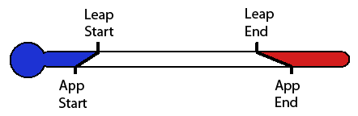
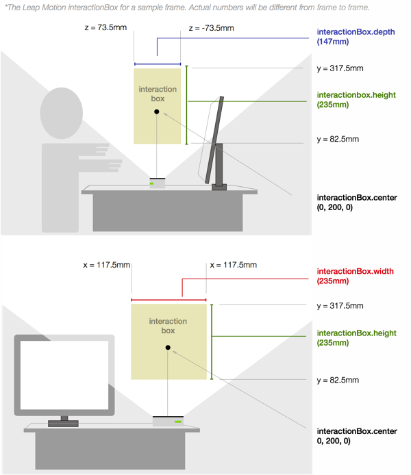

Coordinate Systems¶
A fundamental task when using the Leap Motion controller in an application is mapping the coordinate values received from the controller to the appropriate application-defined coordinate system.
Leap Motion Coordinates¶
The Leap Motion Controller provides coordinates in units of real world millimeters within the Leap Motion frame of reference. That is, if a finger tip’s position is given as (x, y, z) = [100, 100, -100], those numbers are millimeters – or, x = +10cm, y = 10cm, z = -10cm.
The Leap Controller hardware itself is the center of this frame of reference. The origin is located at the top, center of the hardware. That is if you touch the middle of the Leap Motion controller (and were able to get data) the coordinates of your finger tip would be [0, 0, 0].

The Leap Motion controller uses a right-handed coordinate system.
In its normal position, that is on a desk with the user on one side and the computer monitor on the other, the user is “in front” (+z) of the controller and the monitor screen is “behind”(-z) the controller. If the user enables automatic orientation, the Leap Motion software adjusts the coordinate system if the controller is reversed (the green LED is facing away from the user). However, if the user places their controller in a different position (upside down or sideways), the Leap Motion software cannot detect or adjust for this.
Design your application to encourage the user to not get too close to the Leap Motion Controller with visual cues; hovering your hands right over the controller increases the chance that fingers and hands will block each other from view.
Mapping Coordinates to your Application¶
To use information from the Leap Motion device in your application, you have to interpret that data so it makes sense in your application. For example, to map Leap Motion coordinates to application coordinates, you have to decide which axes to use, how much of the Leap Motion field of view to take advantage of, and whether to use an absolute mapping or a relative mapping.
For 3D applications, it usually makes sense to use all three axes of the Leap Motion device. For 2D applications, you can often discard one axis, typically the z-axis, and map input from the two remaining axes to the 2D application coordinates.
Whether you use two or three axes, you have to decide how much of the Leap Motion range and field of view to use in your application. The field of view is an inverted pyramid. The available range on the x and z axes is much smaller close to the device than it is near the top of the range. If you use too wide a range, or allow too low a height, then the user won’t be able to reach the bottom corners of your application. Consider the following example, which maps the Leap Motion coordinates to the rectangle below (this example requires a plugged-in Leap Motion controller to view):
Notice that when you try to reach the bottom corners, your finger passes out of the device’s field of view and you cannot move the cursor there.
You also have to decide how to scale the Leap Motion coordinates to suit your application (i.e. how many pixels per millimeter in a 2D application). The greater the scale factor, the more affect a small physical movement will have. This can make it easier for the user to move a pointer, for example, from one side of the application to another, but also makes precise positioning more difficult. You will need to find the best balance between speed and precision for your application.
Finally, the difference between coordinate systems may require flipping an axis or three. For example, many 2D window drawing APIs put the origin at the top, left corner of the window, with y values increasing downward. Leap Motion y values increase upwards, so you have to essentially flip the y axis when making the conversion. As another example, the Unity 3D game development system uses a left-handed coordinate system, wheras the Leap Motion software uses a right-handed coordinate system.
Mapping coordinates is much like converting temperatures from celsius to fahrenheit if you imagine each axis as a scale with corresponding start (freezing) and an end (boiling) points:
You can use this formula to make the conversion:
where:
By changing the start and end points you can change the mapping of coordinates to make movements cover a larger or smaller area in your application. The following example uses this formula on the x and y axes to map an area of the Leap Motion field of view to a rectangular display area. You can play with the controls to set the ranges of the Leap Motion Scale.
If you decrease the range values, a smaller range of physical motion is mapped to the width of the display area, making it easier to move from one side to the other.
The X-center value offsets the center of the X scale to the left or right. Because each hand naturally rests to the right or left of the Leap Motion controller, it can be easier for the user to interact with a full-screen application if you offset the coordinate mapping based on which hand is in use.
The Y-floor slider sets the value on the Leap Motion y axis that maps to the bottom of the display area. A larger value means the user has to hold their hand higher above the controller, which also means that they are more likely to be able to reach the bottom corners.
Enabling the clamp option prevents the cursor from leaving the display area – which can provide a valuable cue to the user as to where they can interact.
A more general method of converting coordinates is to go from the Leap Motion coordinates to a normalized scale running between 0 and 1.0 and then from this normalized scale to the final, application scale. In fact, the InteractionBox class in the Leap Motion API will normalize coordinates for you.
The Interaction Box¶
The InteractionBox defines a rectilinear area within the Leap Motion field of view.

As long as the user’s hand or finger stays within this box, it is guaranteed to remain in the Leap Motion field of view. You can use this guarantee in your application by mapping the interaction area of your application to the area defined by the InteractionBox instead of mapping to the entire Leap Motion field of view. The InteractionBox class provides the NormalizePoint() method to help map Leap Motion coordinates to your application coordinates (by first normalizing them to the range [0..1]).
The size of the InteractionBox is determined by the Leap Motion field of view and the user’s interaction height setting (in the Leap Motion control panel). The controller software adjusts the size of the box based on the height to keep the bottom corners within the filed of view. If you set the interaction height higher, then the box becomes larger. Users can set the interaction height based on the height they prefer to hold their hands when using the controller. Some users like to hold their hands much higher above the device than others. By using the InteractionBox to map the Leap Motion coordinate system to your application coordinate system, you can accommodate both types of user. A user can also set the interaction height to adjust automatically. If the user moves his or her hands below the current floor of the interaction box, the controller software lowers the height (until it reaches the minimum height); likewise if the user moves above the interaction box, the controller raises the box.
Because the interaction box can change size and position, every Frame object contains an instance of the InteractionBox class. The following example illustrates the behavior of the interaction box. Change your interaction height settings using the Leap Motion control panel to see how it affects the box itself.
You can use the clamp control in this example to see the affect of clamping coordinates when you use the NormalizePoint() function. If you do not clamp, you can get values which are less than zero or greater than one.
Because the interaction box can change over time, be aware that the normalized coordinates of a point measured in one frame may not match the normalized coordinates of the same real world point, when normalized using the interaction box provided by another frame. Thus straight lines or perfect circles “drawn in the air” by the user may not be straight or smooth if they are normalized across frames. For most applications, this isn’t a significant problem, but you should test your application with the Automatic Interaction Height setting enabled if you aren’t sure.
To guarantee that a set of points tracked across frames is normalized consistently, you can save a single InteractionBox object – ideally the one with the largest height, width, and depth – and use that to normalize all the points.
Mapping Coordinates with the Interaction Box¶
To use the interaction box, first normalize the point to be mapped and then convert the normalized coordinates to your application coordinate system. Normalizing converts points within the interaction area to the range [0..1] and moves the origin to the bottom, left, back corner. You can then multiply these normalized coordinates by the maximum range for each axis of your application coordinate system, shifting and inverting the axis as necessary.
Mapping to 2D¶
For example, most 2D drawing coordinate systems put the origin at the top, left corner of the window – and, naturally, don’t use a z-axis. To map Leap Motion coordinates to such a 2D system, you could use the following code:
int appWidth = 800;
int appHeight = 600;
InteractionBox iBox = leap.Frame().InteractionBox;
if(leap.Frame().Hands.Count > 0){
Hand hand = leap.Frame().Hands[0];
Finger finger = hand.Fingers[1];
Leap.Vector leapPoint = finger.StabilizedTipPosition;
Leap.Vector normalizedPoint = iBox.NormalizePoint(leapPoint, false);
float appX = normalizedPoint.x * appWidth;
float appY = (1 - normalizedPoint.y) * appHeight;
//The z-coordinate is not used
}
Notice that the example inverts the y-axis by subtracting the normalized y coordinate from one before multiplying by the maximum height.
If you are using pointable or palm positions in a 2D application, consider using the |Pointable.stabilizedTipPosition|_ or Hand.StabilizedPalmPosition. These attributes have extra stabilization and filtering to help the user interact with a 2D interface. For 3D applications, the unstabilized |Pointable.tipPosition|_ and Hand.PalmPosition are usually more suitable.
Mapping to 3D¶
To map coordinates to a 3D coordinate system, you must know the scale factors, whether the origin needs to be translated, and whether the target coordinate system uses the right-hand rule or the left-hand rule.
Units of measurement and scale in 3D graphics tend to be determined arbitrarily, but essentially, you need to decide how a movement in the real world should map to a movement in the virtual world.
The origin of coordinates normalized with an interaction box is the bottom, left, rear corner. You can translate the normalized coordinates to move the origin to a more suitable location.
The Leap Motion coordinate system uses the right-hand rule. If your coordinate system uses the left-hand rule, multiply the z-axis by -1 before normalizing (or swap the x and y axes).
The following example illustrates mapping Leap Motion coordinates to a 3D system with the origin of the interaction area at the bottom center of the world, scales the range of the interaction box to 200 3d world units across:
Leap.Vector leapToWorld(Leap.Vector leapPoint, InteractionBox iBox)
{
leapPoint.z *= -1.0f; //right-hand to left-hand rule
Leap.Vector normalized = iBox.NormalizePoint(leapPoint, false);
normalized += new Leap.Vector(0.5f, 0f, 0.5f); //recenter origin
return normalized * 100.0f; //scale
}
Mapping Right and Left Hands Differently¶
If your application allows full-screen interactions, it can be a good idea to offset the origin of the normalized coordinates differently for each hand. By moving the left hand’s origin to the right and the right hand’s origin to the left, you essentially center each hand’s natural resting point in your application’s interaction area. This makes it less tiring for the left hand to reach the right corner of the application and vice versa.
To shift the origin for each hand, use Hand.IsLeft to detect which hand is which, and then translate the normalized coordinates right or left:
Leap.Vector differentialNormalizer(Leap.Vector leapPoint,
InteractionBox iBox,
bool isLeft,
bool clamp)
{
Leap.Vector normalized = iBox.NormalizePoint(leapPoint, false);
float offset = isLeft ? 0.25f : -0.25f;
normalized.x += offset;
//clamp after offsetting
normalized.x = (clamp && normalized.x < 0) ? 0 : normalized.x;
normalized.x = (clamp && normalized.x > 1) ? 1 : normalized.x;
normalized.y = (clamp && normalized.y < 0) ? 0 : normalized.y;
normalized.y = (clamp && normalized.y > 1) ? 1 : normalized.y;
return normalized;
}
Note that you must set the clamp parameter to false to use this technique. (If you want clamping, you can do it manually after offsetting the x-coordinate.)
Increasing Sensitivity¶
Mapping the full extents of the interaction box to the interaction area of your application is not always the best choice. You may want a smaller movement in the real world to have a larger affect in your application. You can simply scale the Leap Motion coordinates as desired without normalizing (see section above). But if you still want the other benefits of the InteractionBox, you can scale the normalized coordinates by a factor greater than one. A factor of two will make a given motion twice as sensitive; a factor of three, three times more sensitive; and so on. If you make things too sensitive, however, your interaction could become jumpy and difficult to control.
You can do the opposite, of course, by multiplying the normalized coordinates by a value less than one, but it often doesn’t make sense – by definition, the user’s motion won’t cover the entire area of your application. It is easier, instead, to define your application interaction area as a smaller area within the application coordinate system (the math is the same).
The following example, adapts the 2D example above to make the movement 1.5 times more sensitive:
float appWidth = 800;
float appHeight = 600;
InteractionBox iBox = leap.Frame().InteractionBox;
if(leap.Frame().Hands.Count > 0){
Hand hand = leap.Frame().Hands[0];
Finger finger = hand.Fingers[1];
Leap.Vector leapPoint = finger.StabilizedTipPosition;
Leap.Vector normalizedPoint = iBox.NormalizePoint(leapPoint, false);
normalizedPoint *= 1.5f; //scale
normalizedPoint -= new Leap.Vector(.25f, .25f, .25f); // re-center
float appX = normalizedPoint.x * appWidth;
float appY = (1 - normalizedPoint.y) * appHeight;
//The z-coordinate is not used
}
You will notice that Setting the clamp parameter to true also no longer keeps the final coordinates within your defined bounds. The user’s motions can more easily move outside the application’s interaction area since you are effectively mapping a smaller subset of the interaction box to your application. Providing good visual feedback to keep the user oriented is helpful (as always).
Mapping to Unity coordinates¶
The Unity 3D environment uses the left-hand rule, meaning the z axis points away from the user when the x-axis is to the right and y is up. So, you will need to multiply Leap Motion coordinates by -1 for them to be map correctly in Unity3D. See Mapping to 3D.